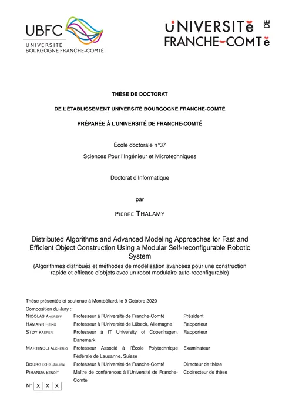

Defended in Montbéliard, France, on 9 October 2020. Supervised by Prof. Julien Bourgeois and Dr. Benoît Piranda.
Abstract
Humans have always been on a quest to master their environment. But with the arrival of our digital age, an emerging technology now stands as the ultimate tool for that purpose: programmable matter. While any form of matter that can be programmed to autonomously react to a stimulus would fit that label, its most promising substrate resides in modular robotic systems. Such robotic systems are composed of interconnected, autonomous, and computationally simple modules that must coordinate through their motions and communications to achieve a complex common goal.
Such programmable matter technology could be used to realize tangible and interactive 3D display systems that could revolutionize the ways in which we interact with the virtual world. Large-scale modular robotic systems with up to hundreds of thousands of modules can be used to form tangible shapes that can be rearranged at will. From an algorithmic point of view, however, this self-reconfiguration process is a formidable challenge due to the kinematic, communication, control, and time constraints imposed on the modules during this process.
We argue in this thesis that there exist ways to accelerate the self-reconfiguration of programmable matter systems, and that a new class of reconfiguration methods with increased speed and specifically tailored to tangible display systems must emerge. We contend that such methods can be achieved by proposing a novel way of representing programmable matter objects, and by using a dedicated reconfiguration platform supporting self-reconfiguration.
Therefore, we propose a framework to apply this novel approach on quasi-spherical modules arranged in a face-centered cubic lattice, and present algorithms to implement self-reconfiguration in this context. We analyze these algorithms and evaluate them on classes of shapes with increasing complexity, to show that our method enables previously unattainable reconfiguration times.
Jury
- Nicolas Andreff, Professor, University of Franche-Comté President
- Heiko Hamann, Professor, University of Lübeck Reviewer
- Kasper Støy, Professor, IT University of Copenhagen Reviewer
- Alcherio Martinoli, Associate Professor, EPFL Examiner
- Julien Bourgeois, Professor, University of Franche-Comté Thesis director
- Benoît Piranda, Associate Professor, University of Franche-Comté Thesis co-director
Defense replay
Recorded on 9 October 2020 in Montbéliard, France. The presentation itself starts at 22:45; the chapters below jump straight to each part.
BibTeX
@phdthesis{thalamy_phd_2020,
title = {Distributed Algorithms and Advanced Modeling Approaches for Fast and Efficient Object Construction Using a Modular Self-reconfigurable Robotic System},
author = {Thalamy, Pierre},
school = {Universit{\'e} Bourgogne Franche-Comt{\'e}},
year = {2020},
month = oct,
address = {Montb{\'e}liard, France}
}